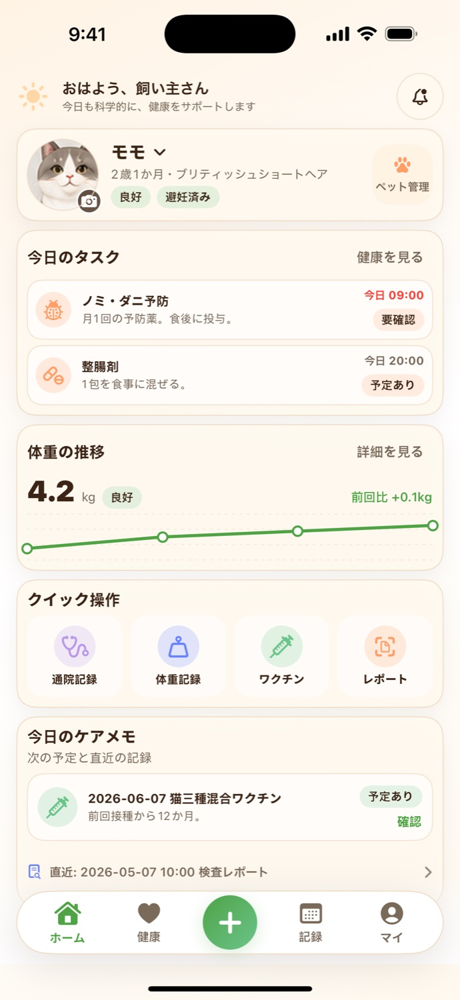
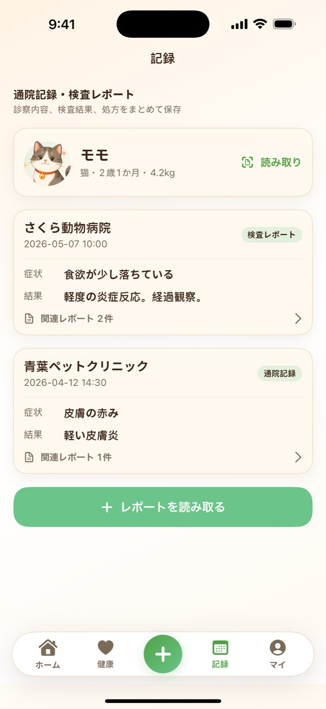
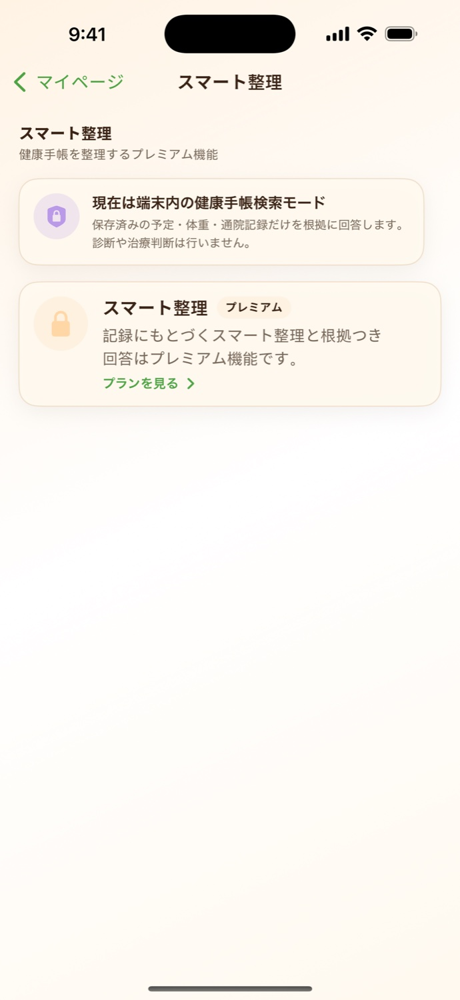
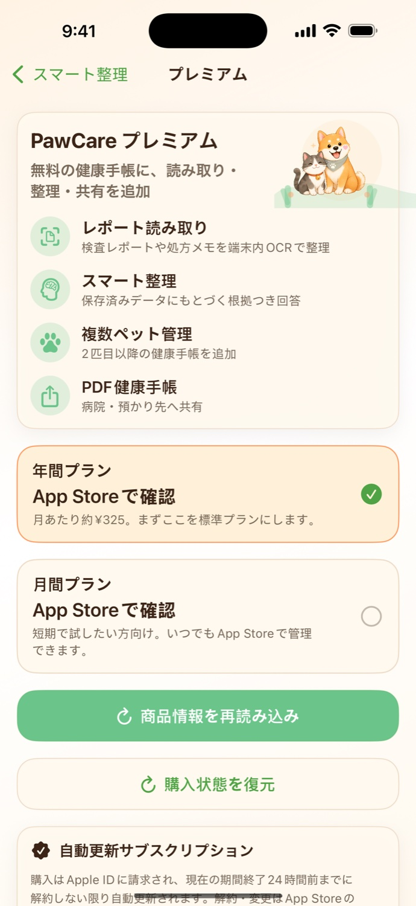
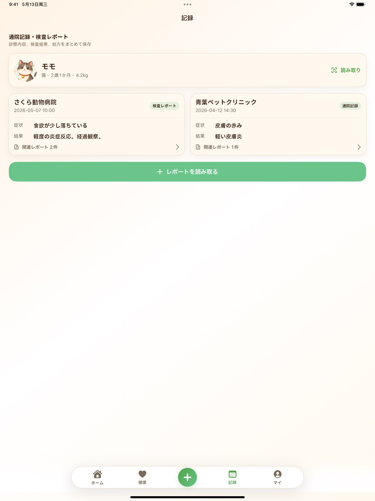

無料でできること
- 1匹目の健康手帳
- 手動の通院記録
- ワクチン・薬リマインダー
- 病院・費用メモ
犬猫の健康手帳アプリ
PawCare は、通院記録、ワクチン予定、体重、病院・費用メモ、検査レポートをペットごとに整理するための iPhone・iPad アプリです。

Records
紙、写真、PDF、記憶に分かれていた情報を、ペットごとの時系列に戻します。

通院、検査、ワクチン、処方をフィルターして、必要な情報だけ確認できます。

検査表や書類から文字を読み取り、保存前に内容を確認できます。

通院履歴や添付資料を、家族や病院に見せやすい形へ整理します。
iPad ready
iPad では最近の記録、検査レポート、今日のタスクを広く表示できます。通院前の確認や家族との共有に向いています。

Safety
PawCare は、飼い主が獣医師との会話や日々の変化を忘れないための個人用ノートです。症状の評価、診断、治療、投薬量の判断、緊急度判定は行いません。